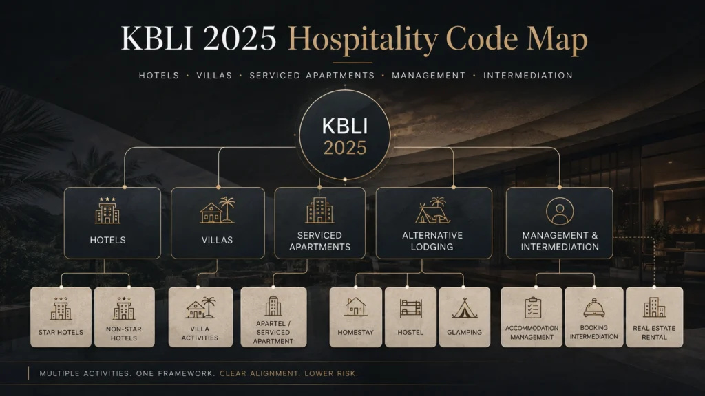
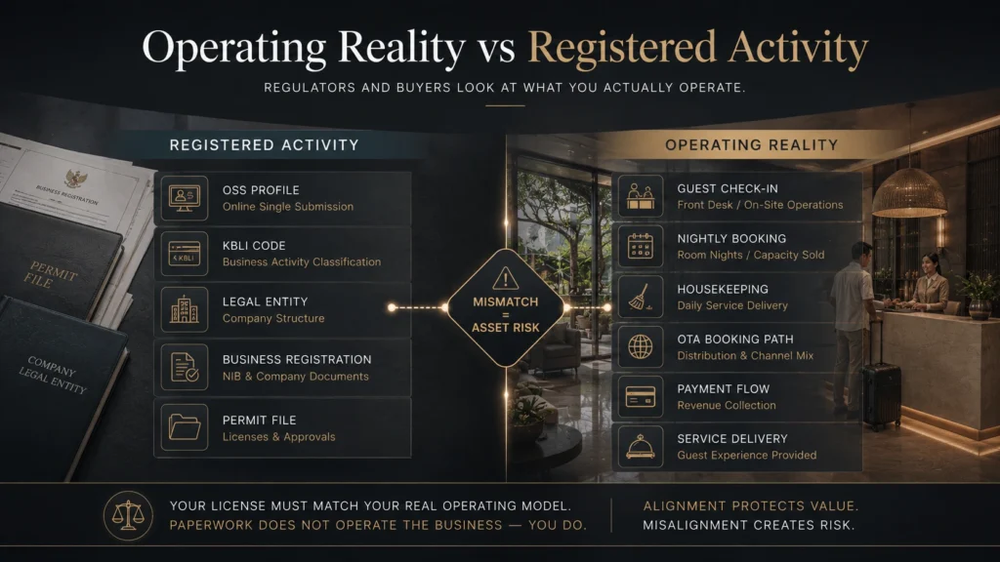
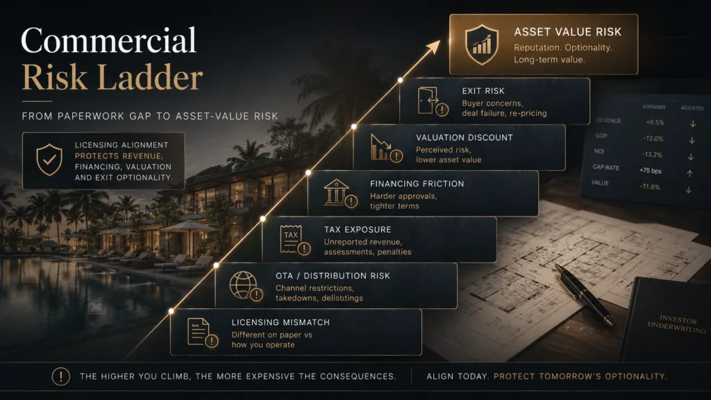
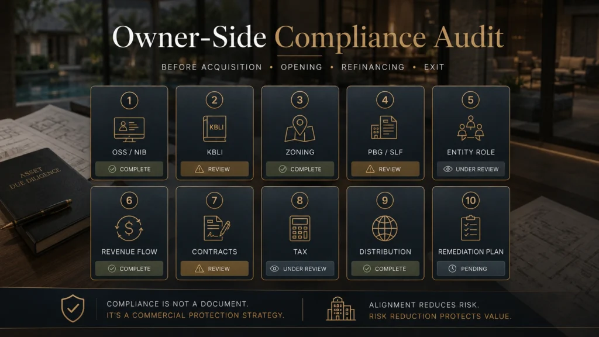

Bali hospitality licensing is entering a more serious phase, and most owners are still asking the wrong question about KBLI 2025.
The question is not only: “Which code should I use?”
The real question is whether the license, land use, building status, legal entity, revenue flow, management contract, and actual guest operation all describe the same business.
That is where the risk sits.
Bali hospitality licensing is entering a more serious phase. Indonesia’s business classification system is moving into KBLI 2025 under BPS Regulation No. 7/2025 on Klasifikasi Baku Lapangan Usaha Indonesia. At the same time, the OSS risk-based licensing framework continues to define how business permits are issued, supervised, and updated.
For Bali hotels, villas, serviced apartments, boutique resorts, and mixed-use hospitality assets, this is not a back-office paperwork update. It is a structural licensing event.
This article is written for owners, investors, developers, operators, asset managers, and family offices. It is not legal advice. It is an operator-first interpretation of what KBLI 2025 and the OSS licensing environment mean for hospitality asset strategy in Bali.
Key Takeaways
- KBLI 2025 is a classification reset, not just a code change. It changes how business activities are described and mapped across accommodation, real estate, management, intermediation, and related service categories.
- Existing permits do not automatically become invalid. BPS has clarified that existing licenses remain valid, but substantive changes in business activity may require adjustment through OSS or AHU.
- The transition deadline matters. Government sources state that OSS and AHU adjustment to KBLI 2025 should be completed no later than 18 June 2026.
- The highest risk is mismatch. A villa operating nightly stays under a passive real-estate rental structure, or a mixed-use hotel generating F&B and spa revenue without clear licensing treatment, creates operational and commercial exposure.
- Compliance is now an underwriting issue. Licensing affects distribution, tax exposure, financing, operator structure, exit value, and the discount rate an investor should apply to the asset.
Why This Topic Matters Now
KBLI 2025 updates Indonesia’s standard classification of business activities and replaces the previous KBLI 2020 framework. For Bali hospitality licensing, the important issue is not only the new code structure. It is whether each registered activity still matches the real operating model.
BPS has clarified that KBLI 2025 does not require all businesses to obtain new licenses automatically. Existing licenses issued before KBLI 2025 implementation remain valid. Adjustment is required when there is a substantive change in the company’s business purpose, scope, or activity. If the change is only a code conversion without a change in business substance, the adjustment can be handled automatically through the OSS and AHU systems.
For hospitality operators, this matters because the asset is rarely simple.
A Bali hospitality project may combine:
- accommodation;
- F&B;
- spa or wellness;
- event space;
- branded residences;
- serviced apartments;
- villa rental;
- property management;
- real estate development;
- third-party management;
- OTA or booking intermediation.
Under a more granular business classification architecture, each of those activities may need to be described more precisely than before.
That is why Bali hospitality licensing can no longer be treated as a legal-admin task at the end of development. It must be reviewed as part of the asset’s operating model.
What KBLI 2025 Actually Changes
KBLI is the classification system used to describe economic activities in Indonesia. It is not merely a statistical label.
In practice, KBLI influences:
- OSS registration;
- risk-based licensing;
- business activity mapping;
- investment reporting;
- sectoral permits;
- how a regulator understands what the company is allowed to do.
The broader licensing environment also sits inside Indonesia’s risk-based business licensing framework. PP No. 28/2025 on risk-based business licensing regulates the wider structure for business licensing, OSS services, supervision, evaluation, and sanctions.
For hospitality, the important shift is that accommodation and related services become more specific.
The hospitality-relevant universe includes:
| Business Area | Why It Matters for Owners |
|---|---|
| Star-rated hotels | Hotel classification, risk level, tourism standards, operating permits |
| Non-star hotels | Boutique and independent hotel positioning, service-level clarity |
| Villas | Short-stay accommodation vs residential rental risk |
| Serviced apartments | Apartment rental vs hotel-style accommodation distinction |
| Homestays and hostels | MSME, local-operator, and tourism-standard considerations |
| Glamping and alternative accommodation | Classification of emerging hospitality formats |
| Accommodation management | Whether a company manages properties for owners |
| Accommodation intermediation | Whether a company acts as a booking or matching platform |
| Real estate rental and development | Whether the activity is property holding, leasing, or hospitality operation |
The practical question is no longer only: “What is the nearest available KBLI code?”
The better question is:
Are you operating accommodation, managing accommodation, intermediating bookings, leasing real estate, or developing property for sale?
Those are not the same business.

The Core Problem: Your License Must Match Your Operating Reality
A Bali hospitality asset can look compliant on paper but still be exposed if the operating reality does not match the registered structure.
This is the core weakness in many projects.
A property may have an NIB. It may have a company. It may even have some form of permit history. But if the guest-facing operation, revenue flow, land use, building status, and management structure do not match the registered activity, the asset carries structural risk.
| Operating Reality | Common Risk | Why It Matters |
|---|---|---|
| Nightly villa rental with housekeeping, guest support, and OTA distribution | Registered as passive real estate rental | The asset behaves like short-stay accommodation, not simple property rental. |
| Third-party management company controls pricing, staff, guest experience, and payment flows | Contract describes only “marketing support” or “agency” | Actual control may point to management or operation, not light intermediation. |
| Hotel has independent F&B, spa, retail, or event revenue | Supporting activities are not properly mapped | Revenue-generating activities may require clearer KBLI and reporting treatment. |
| Serviced apartment marketed as hotel-style accommodation | Registered as residential apartment rental | Stay pattern and service layer may contradict the license logic. |
| Foreign investor owns the asset while a local party “operates” informally | Nominee-style ambiguity | Weak structure creates enforcement, tax, banking, and exit risk. |
The issue is not only legal. It is operational.
Regulators, banks, buyers, operators, and serious investors increasingly care about what the business actually does, not only what the document says.
This is why Zenith treats licensing as part of the same strategic discipline as hotel feasibility and underwriting, not as a detached compliance checklist.

What Most Owners and Investors Get Wrong
Many owners treat compliance as a document checklist:
- NIB: yes or no;
- PBG: yes or no;
- SLF: yes or no;
- tax registration: yes or no;
- tourism certificate: yes or no.
Those documents matter. But they are not enough.
The better question is whether the whole commercial architecture is coherent.
| Area | Owner Question |
|---|---|
| Entity | Which company earns which revenue? |
| KBLI | Does each registered activity match the actual activity? |
| Land | Is the use allowed under the relevant zoning or spatial framework? |
| Building | Does the PBG and SLF reflect the real use of the asset? |
| Guest journey | Are stays nightly, weekly, monthly, or residential? |
| Service model | Is there housekeeping, front office, F&B, wellness, transport, or concierge? |
| Contracting | Who contracts with the guest: owner, operator, agent, or manager? |
| Revenue | Are accommodation, F&B, spa, retail, and management fees separated? |
| Distribution | Are OTAs, direct booking, corporate contracts, and agents aligned with the license? |
| Reporting | Can accounting and investment reporting support the structure? |
This is where many Bali assets are weak.
The land deal, design, tax setup, management agreement, and marketing story were often built at different times by different advisors. KBLI 2025 makes that fragmentation more visible.
For serious owners, this is also where hotel Product DNA becomes relevant. A clear Product DNA defines the guest, operating promise, spatial logic, service model, F&B role, wellness role, and commercial model before the asset is locked into the wrong structure.
The Zenith View: Licensing Is Now Part of the Operating Model
Zenith’s view is direct:
Licensing is no longer a post-design administrative step. It is part of the operating model.
For a serious hospitality investor, the licensing architecture should be reviewed before:
- land acquisition;
- lease signing;
- villa purchase;
- hotel concept approval;
- HMA or management contract negotiation;
- branded residence sales launch;
- serviced apartment positioning;
- pre-opening budget approval;
- OTA launch;
- refinancing;
- asset sale.
A legal advisor can interpret the regulation. A notary can amend documents. A tax advisor can structure reporting.
But the owner also needs an operator-side review that asks:
- What is the asset actually selling?
- Who is the guest?
- What is the stay pattern?
- Who controls pricing?
- Who controls service delivery?
- Who receives revenue?
- Which activity creates profit?
- Which entity carries liability?
- What does the investor believe they bought?
That is not a code-selection exercise. That is hospitality operating architecture.
This is also why owner-side advisory should begin early. A project that waits until the end of design to resolve licensing may discover that the building, guest journey, commercial model, and operating structure were never aligned. This is the same problem Zenith sees across broader hotel development advisory work in Indonesia.
KBLI 2025 Risk Map for Bali Hospitality Assets
The table below is a strategic risk map, not legal advice. Each asset requires review by qualified Indonesian legal, tax, and licensing advisors.
| Asset Type | Typical KBLI Issue | Risk Level | Owner-Side Implication |
|---|---|---|---|
| 4 - 5 star hotel | Cleaner hotel classification, but supporting activities matter | Low - Moderate | Audit F&B, spa, retail, events, and management structure. |
| Boutique hotel / non-star hotel | Star/non-star positioning may not match service reality | Moderate | Ensure classification, guest promise, and service level align. |
| Villa compound | Villa operation, management, and ownership may be mixed | High | Separate ownership, operations, management, and booking role. |
| Single-villa short-term rental | Nightly OTA use may conflict with property-rental structure | High | Verify zoning, permits, tax, entity, and distribution status. |
| Serviced apartment | Residential rental vs hotel-style operation ambiguity | High | Define whether the product is residential, hospitality, or mixed-use. |
| Co-living / hostel | Stay length and service model may not map cleanly | Moderate | Clarify monthly living vs short-stay accommodation vs hostel operation. |
| Mixed-use resort | Accommodation plus F&B, spa, retail, event, or membership revenue | High | Build a revenue-by-activity KBLI and entity map. |
| Management company | Management vs intermediation vs operator role | High | Contract language must match actual control and payment flows. |
The highest-risk category is not always the largest hotel. It is usually the asset where the business model is unclear.
A 20-key boutique hotel with clean zoning, correct building documentation, clear tax registration, and coherent operating structure may be less exposed than a “simple” villa asset with informal management, nightly OTA sales, unclear tax treatment, and a weak entity structure.
Operational Implications
1. SOPs must follow the licensed activity
If the asset is licensed as long-term residential rental but the SOPs look like hotel SOPs, the operation creates evidence against itself.
Check-in procedures, housekeeping frequency, guest communication, OTA descriptions, service recovery, guest support, and staff roles must match the declared business model.
2. Contracts must match control
A management agreement that says the manager has limited responsibility is weak if the manager controls rates, hires staff, runs guest communications, collects payments, and directs service delivery.
The contract must reflect the actual business.
3. Revenue streams must be separated
Accommodation, F&B, spa, wellness, retail, events, memberships, and management fees should not be treated as one blurred operating bucket.
The more mixed-use the asset, the more important it becomes to map revenue by activity.
4. Pre-opening governance must include licensing gates
For new developments, licensing should not be left until “before opening.”
The licensing path should be part of the pre-opening governance calendar, together with operator appointment, PBG/SLF readiness, SOP development, staffing, systems, distribution, tax registration, and opening-readiness reviews.
5. Zoning is a hard constraint
If the land-use framework does not permit the intended hospitality activity, KBLI selection will not solve the problem.
For owners and investors, spatial conformity should be checked before capital is committed.
This is especially important in Bali, where hospitality investment often begins with land opportunity rather than operating feasibility.

Commercial Implications
1. Distribution risk
If an accommodation asset depends on OTAs or digital booking channels, compliance becomes a revenue protection issue.
Tourism-sector licensing is also governed by sector-specific standards, supervision, and administrative sanctions. Permenpar No. 6/2025 regulates standards, supervision, and administrative sanctions for risk-based business licensing in the tourism sector.
For owners, the commercial conclusion is simple.
If the booking channel requires proof of legitimacy, Bali hospitality licensing becomes part of channel strategy.
2. Valuation risk
Two villas with the same ADR and occupancy are not worth the same if one has coherent licensing, zoning, tax, and operating documentation while the other relies on informal arrangements.
The second asset may still generate cash flow. But it carries a higher risk discount.
3. Financing risk
Banks and serious lenders care about enforceability.
If the asset’s permits, entity structure, and revenue model are inconsistent, financing risk increases. The same applies to institutional investors, family offices, and serious strategic buyers.
4. Tax exposure
If the business has been operating hospitality revenue through a structure that does not properly recognize accommodation activity, tax exposure may appear during due diligence, refinancing, or enforcement review.
This is not only a tax issue. It is an asset-value issue.
5. Exit risk
The wrong licensing structure may not kill cash flow immediately. But it can damage exit value.
A sophisticated buyer will ask for:
- company documents;
- OSS registration;
- KBLI mapping;
- PBG and SLF;
- land-use confirmation;
- tourism-sector permits;
- tax trail;
- management agreements;
- OTA and direct-booking records;
- operating data;
- revenue allocation by activity.
If those do not reconcile, the buyer will either reprice the deal or walk away.
This is why regulatory and licensing strategy belongs inside the broader Bali hospitality regulation and owner strategy conversation, not at the end of the process.

What To Check Before You Commit More Capital
Owners and investors should not start with the code.
For Bali hospitality licensing, the first review should start with the asset reality.
| Step | What To Check | Output |
|---|---|---|
| 1 | Current OSS, NIB, and registered KBLI | Current license snapshot |
| 2 | Actual operating model | Guest, service, revenue, staffing, and distribution map |
| 3 | Land use and zoning | KKPR / spatial-use risk note |
| 4 | Building documents | PBG and SLF status by structure |
| 5 | Entity role | PropCo / OpCo / ManCo / agent role map |
| 6 | Revenue flow | Which entity earns which income |
| 7 | Contract reality | Owner, manager, guest, OTA, and vendor contract review |
| 8 | Supporting activities | F&B, spa, wellness, retail, events, memberships |
| 9 | Foreign ownership exposure | PMA / local operator pathway review |
| 10 | Remediation plan | Priority actions, responsible party, and timeline |
This is the minimum owner-side audit before acquisition, refinancing, opening, relaunch, or scaling.
For broader strategic context, owners can also review Zenith hospitality investment and compliance articles.
FAQ
What is KBLI 2025?
KBLI 2025 is Indonesia’s updated standard classification of business activities under BPS Regulation No. 7/2025. It replaces and refines the KBLI 2020 framework and is used to classify economic activities across sectors. For hospitality owners, it matters because the selected business classification influences OSS licensing, risk-based permits, investment reporting, and how authorities understand the activity being conducted.
Do existing hotel or villa licenses become invalid because of KBLI 2025?
No, not automatically. BPS has clarified that existing licenses issued before KBLI 2025 implementation remain valid. If the change is only a code conversion without changing the business substance, adjustment may be handled automatically through OSS and AHU. If the business activity, scope, or purpose changes in substance, manual adjustment may be required.
What is the 18 June 2026 deadline?
Government sources state that adjustment of KBLI 2025 into OSS and AHU systems should be completed no later than 18 June 2026. During the transition period, owners should verify whether their corporate documents, OSS profile, and actual operations are aligned. The deadline does not mean every business needs a new license, but it does create a practical review window.
Is this mainly a villa problem?
No. Villas are highly exposed because many short-term rentals historically operated with weak or informal structures. But the issue also affects boutique hotels, serviced apartments, co-living assets, mixed-use resorts, property management companies, and developments with F&B, spa, retail, event, or wellness revenue. The broader issue is whether the registered activity matches the commercial reality.
Can a PT PMA operate Bali villa rentals?
This requires case-specific legal review. Foreign-owned hospitality structures in Bali need careful assessment because ownership, land use, tourism licensing, operating control, and revenue flow are not the same issue. Owners should not rely on generic online advice or nominee-style shortcuts. The safer approach is to map asset ownership, operating control, local operator role, revenue flow, and licensing eligibility with qualified advisors before committing capital.
What should owners check first?
Start with the mismatch audit: registered KBLI vs actual operation, land-use permission, PBG/SLF, NIB status, tourism-sector permits, tax registration, management contracts, OTA documentation, and revenue flows. If those items do not describe the same business, the owner has a structural compliance risk, not just a paperwork issue.
How does Bali hospitality licensing affect ROI?
Bali hospitality licensing affects ROI through revenue continuity, OTA visibility, tax exposure, financing risk, remediation costs, and exit valuation. A non-compliant or structurally ambiguous asset may still generate short-term cash flow, but it carries higher downside risk. Serious investors should price that risk into acquisition, underwriting, and operator selection.
Which official regulations should owners review first?
Owners should start with the official sources behind KBLI, OSS, and tourism-sector licensing. These include BPS Regulation No. 7/2025 for KBLI 2025, the BPS clarification on existing licenses and OSS/AHU adjustment, PP No. 28/2025 for risk-based business licensing, BKPM Regulation No. 5/2025 for OSS implementation, and Permenpar No. 6/2025 for tourism-sector standards and sanctions.
How can Zenith help?
Zenith can support owners, developers, and investors with a hospitality-specific licensing and operating-model review. The objective is not to replace legal counsel. The objective is to map the commercial and operational reality of the asset, identify where it conflicts with the licensing architecture, and help the owner coordinate legal, tax, operational, and pre-opening decisions around one coherent asset strategy.
Summary Takeaways
- KBLI 2025 is a structural classification shift, not a minor administrative edit.
- Existing licenses may remain valid, but substantive activity changes need attention.
- Bali hospitality assets must reconcile license, land, building, entity, revenue, contract, and operating reality.
- The highest-risk assets are often those with blurred boundaries: villas, serviced apartments, mixed-use resorts, and informal management structures.
- Compliance is now part of underwriting, asset management, channel strategy, and exit value.
- Owners should complete a Bali hospitality licensing and operating-model audit before investing more capital, opening, refinancing, or selling.
CTA
If you own, operate, acquire, or develop a Bali hospitality asset, do not wait for Bali hospitality licensing to become a crisis.
Request a Zenith Licensing & Operating Model Review.
Zenith will help you map the asset’s real operating model against its licensing architecture, revenue flows, guest journey, management structure, and commercial risk - so your next capital decision is based on defensible operating reality, not fragmented paperwork.
Start a conversation